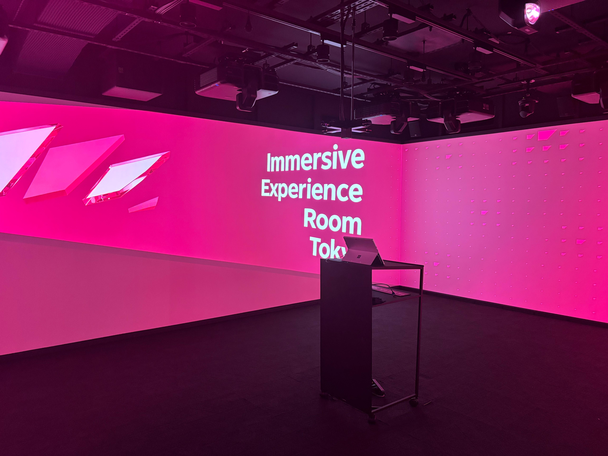
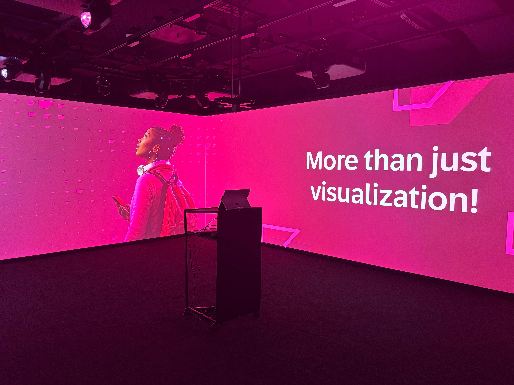

Fourth practical phase in Tokyo, Japan — creating customer-facing materials, developing the Autonomous Enterprise presentation and joining real customer meetings.
Bringing SAP's innovations to life — from Tokyo. Back to timelineFor my fourth practical phase, I joined the CS Japan Growth Office in Tokyo — a rotation that took me far outside my usual environment. The team focuses on Presales and the Experience Center, working directly with customers to showcase SAP's solutions. My role was to create visual communication materials and customer-facing content that helps bring SAP's innovations to life.
One of my main tasks was designing a PowerPoint template for the team — a reusable, branded foundation for presentations used in customer meetings and internal communication. I also created an email banner to give the team a consistent and professional visual identity across their outgoing communications.

A key project was the SAP Experience Center Tokyo slide deck — a dual-purpose presentation designed to work for two audiences from a single source. For customers, the deck delivers an immersive, visually rich experience inspired by Tokyo's neon aesthetics and Japanese cultural elements. For internal employees, the same deck switches to a clean, information-focused layout. One design system, two communication modes.

Beyond creating materials, I had the opportunity to participate in real customer meetings — experiencing first-hand how Presales conversations work, how customers respond to visual storytelling, and how the materials I created came to life in practice.
This rotation broadened my perspective far beyond design — I experienced what it means to work directly with customers in a Presales context, create materials that need to communicate complex ideas clearly, and grow both professionally and personally in a completely new cultural environment.